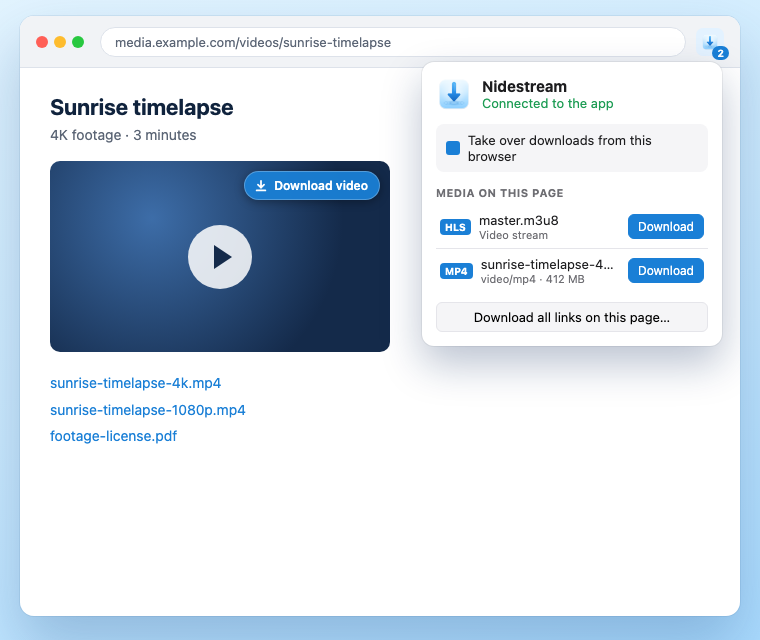

Faster downloads that resume where they stopped, carry on from a fresh link when the old one expires, and come straight from your browser, videos included.
Download for Mac
Nidestream isn't notarized by Apple yet, so macOS asks you to approve it once.
Open Nidestream.dmg and drag Nidestream onto the Applications folder.
Open Nidestream and click Done on the warning. Then open System Settings → Privacy & Security, click Open Anyway and enter your password.
Nidestream shows you how to add its extension to Chrome, Brave, Edge or Firefox. After that, downloads you start in the browser go to Nidestream.
Hands your browser's downloads, links and videos to Nidestream. It talks only to the app on your own Mac.
Works in Chrome, Brave, Edge, Arc, Vivaldi, Opera and Firefox. Until the store listings are live, open Nidestream and follow Connect Your Browsers to add it.
Everything you'd expect from a download manager like IDM, built for the Mac.
Splits files across several connections and adds more only while they make the download faster.
Pause, lose the connection, or quit: downloads continue where they stopped.
When a link expires, click it again in the browser and Nidestream carries on from where it was.
Finds the videos and streams a page plays, and saves streaming video as a single file.
Download later, at night, or a few at a time, then sleep or shut down when the queue is done.
Categories with their own folders, a speed limiter, batch and whole-site downloads, and a menu bar view.